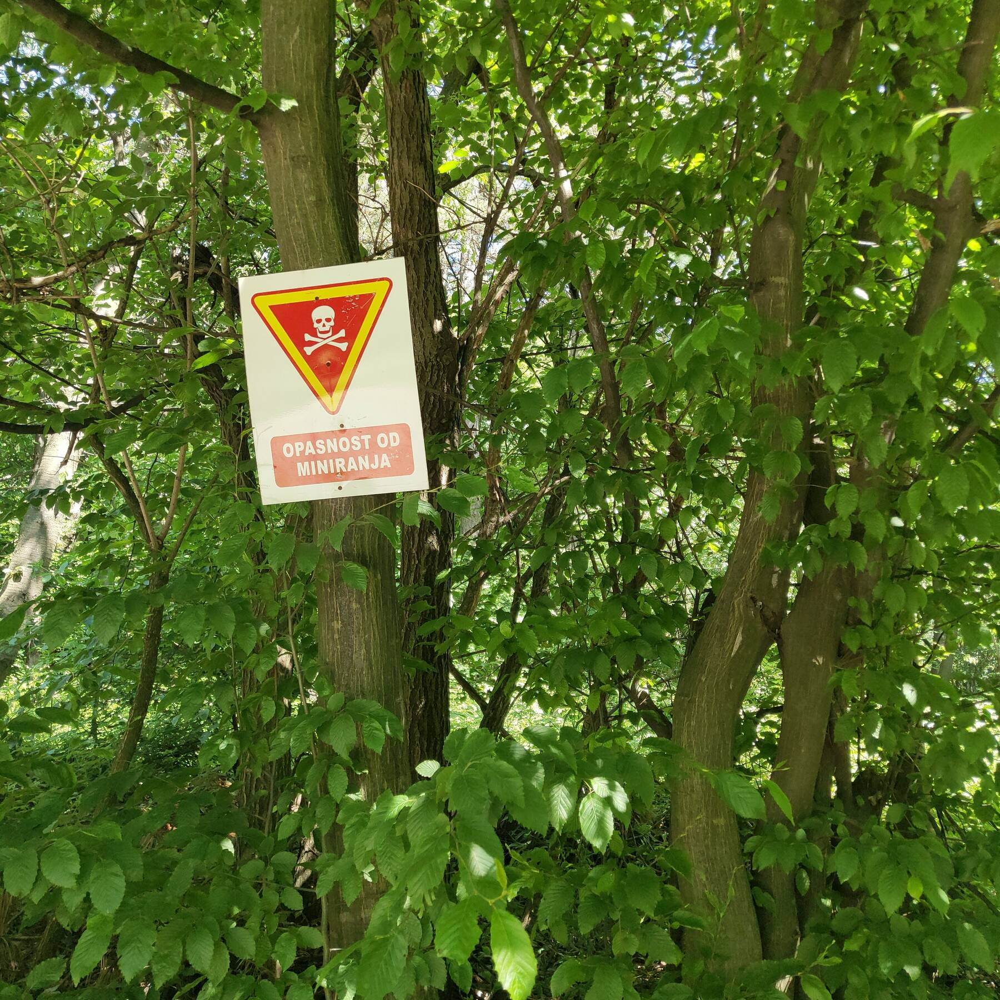

Одна из рядовых вылазок в горы: прогулка по Цвиjичеву врху, что недалеко от Рудника в Шумадии. Собственно, рудник:

Пяденица пятнистая (Pseudopanthera macularia).
А это — Timarcha tenebricosa, также известная как bloody-nosed beetle. Для защиты от хищников она выпускает изо рта оранжево-красную гемолимфу. Жидкость хищникам не по нраву; тем животина и спасается. Похожий защитный механизм есть и у обыкновенных божьих коровок, кстати.
Вид с вершины на озерцо под Майданом (затопленный карьер).